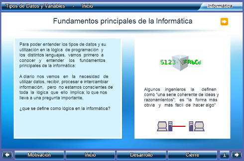
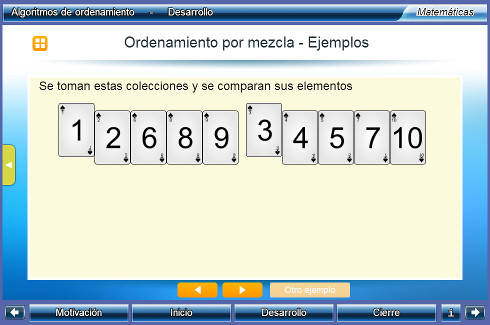

Unidades Didácticas
Interactivas para la Universidad


|
|
Unidades Didácticas Interactivas para la Universidad |
|
|
que implemente el Canvas de HTML5, como por ejemplo: Google Chrome, Mozila Firefox o Safari |
|
Un_058_TiposDeDatosYVariables  Descargar |
Tipos de datos y variables
Comprender que son las constantes, las variables y cual es su importancia en la progrmación de computadoras, de igual forma entender que son los tipos de datos, cómo utilizarlos y cuales son las más comunes en los diferentes lenguajes de programación Área: Matemáticas, Informática, Computación Nivel: Licenciatura |
|
|
Un_081_AlgoritmosDeOrdenamiento  Descargar |
Algoritmos de ordenamiento
Se presentan los algoritmos de ordenamiento de burbuja, por inserción, por mezcla y rápido. Así como explicaciones sobre el proceso del ordenamiento y pseudocódigo para la compresión de los algoritmos. Área: Matemáticas Nivel: Licenciatura |
|
que implemente el Canvas de HTML5, como por ejemplo: Google Chrome, Mozila Firefox o Safari |